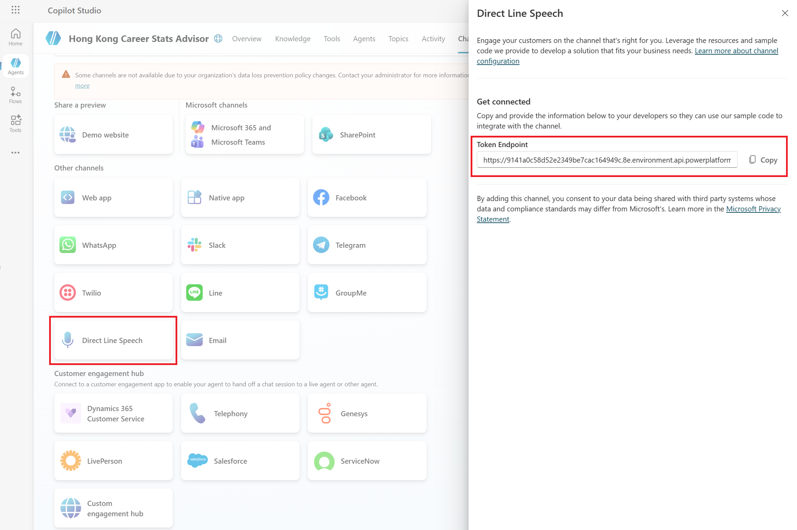

Connecting Your Agent Programmatically
Once you've built your AI agent in Copilot Studio, the next step is making it accessible from your own applications, websites, or devices. This is done programmatically — meaning your code "talks" to the agent without manual interaction.
Think of it like setting up a telephone line: your application dials the agent, and they can communicate back and forth automatically.
Step 1: Enable Direct Line Speech Channel
In Copilot Studio, your agent needs a communication channel — a pathway that defines how the outside world connects to it. For voice-enabled applications, you'll want to use Direct Line Speech.
This channel allows your apps to send voice input to your agent and receive voice or text responses in return. It's designed for real-time conversations, making it perfect for AI assistants.

Select Direct Line Speech Channel from the channel options in Copilot Studio settings
In the Copilot Studio settings, navigate to the Channels section and you'll see multiple options. Look for Direct Line Speech and select it to enable voice-based communication for your agent.
Step 2: Get Your Token Endpoint
Once Direct Line Speech is enabled, you'll receive a token endpoint — this is a special URL your application calls to get a "token." Think of the token as a temporary key that unlocks access to your agent.
For security reasons, tokens expire after a short time. This means if someone intercepts an old token, it won't work anymore. Your application needs to request a fresh token at the start of each conversation session.
Your app calls the token endpoint → receives a temporary key → uses that key to start a conversation → token expires when the session ends → repeat for the next session.
Step 3: Using the Token in Your Code
Here's a simple example of how your application would use the token endpoint to connect to your agent:
Click to reveal: JavaScript token integration example
// Get a token from the endpoint
const response = await fetch('YOUR_TOKEN_ENDPOINT_URL');
const data = await response.json();
const token = data.token;
// Use the token to start a conversation
const connection = new Microsoft.CognitiveServices.Speech.AudioConfig.fromDefaultMicrophoneInput();
const connector = new Microsoft.CognitiveServices.Speech.SpeechConnector(token);
connector.startConversation();For web applications, you can embed the agent directly into your HTML. Here's how a basic integration looks:
Click to reveal: HTML embed example
<!-- Add this to your website -->
<script src="speech-sdk.min.js"></script>
<script>
const tokenEndpoint = "https://your-copilot-studio-token-url";
async function startAgent() {
const response = await fetch(tokenEndpoint);
const { token } = await response.json();
// Connect to your agent using the token
const connector = new SpeechConnector(token);
connector.listen();
}
</script>Common Use Cases
- Embedding the agent in your mobile app for voice-based AI interactions
- Adding an AI assistant to your website or web application to help visitors
- Integrating with IoT devices or smart speakers for hands-free control
- Building custom interfaces for your team's internal tools and workflows
Important Notes
Token endpoints should be kept secure and not shared publicly. Never expose your token endpoint URL in client-side code that visitors can see. Instead, call the endpoint from your server and pass the token to your frontend.
- Tokens expire automatically — this is a safety feature, not a bug
- Each conversation session requires a fresh token request
- Store your endpoint URL securely in environment variables or server configuration
For more details on Copilot Studio capabilities, watch the E-Tutorials series.